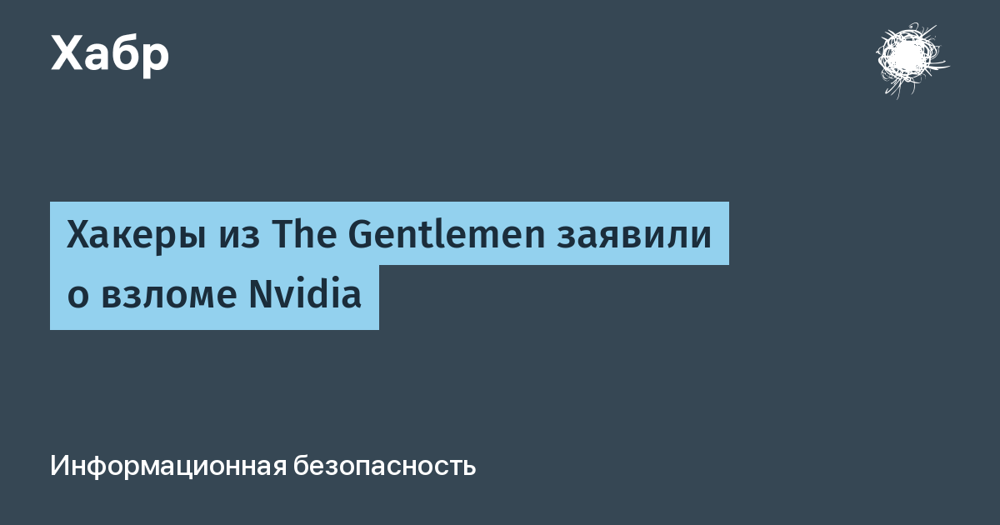

18 ноября 2026 года группировка The Gentlemen добавила Nvidia в свой портал вымогателей — сайт в даркнете, где группы публично «ведут учёт» жертв. Запись сопровождается таймером обратного отсчёта примерно на десять дней до предполагаемой публикации данных, а в разделе о самих данных стоит лаконичное «DATA INFO — SOON». Ни образцов украденного, ни дерева файлов, ни скриншотов, ни описания вектора взлома хакеры не приложили. Nvidia утечку не подтвердила и, по данным СМИ, не ответила на запросы журналистов; трекеры, следящие за сайтами утечек, помечают запись как «pending» — требование существует, но никто его не проверил.
The Gentlemen — операция по модели «вымогательство как сервис», появившаяся в 2025 году: ядро делает вредонос и инфраструктуру, а реальные проникновения выполняют арендаторы-исполнители, с которыми доход делят 90 к 10. Переговоры о выкупе группы ведут через Tox. По объёму заявлений это одна из самых активных вымогательских операций 2026 года: более 1100 «жертв» с момента запуска. Но проверка выглядит иначе: независимо подтверждены — по заявлениям самих компаний или раскрытиям по требованиям регуляторов — лишь 93–95 случаев, меньше одного заявления из десяти.
В мае 2026 года внутренний чат-сервер самой группировки был взломан, наружу утекли механики работы и переписка с жертвами. Вместо тишины The Gentlemen разогнались: примерно 650 из 1100 с лишним заявлений появились уже после той утечки. Исследователи безопасности предупреждают: всплеск «побед» после репутационного удара может быть демонстрацией силы, а не реальными взломами. От этого схема двойного вымогательства не перестаёт работать: шифрование систем плюс угроза публикации данных, а само публичное имя рядом с таймером создаёт давление на жертву и новостной шум — давление работает даже без доказательств.
Таймер задаёт естественную дату разбора: если группировка опубликует настоящие данные — это подтверждённый взлом со всеми вопросами о масштабе; если нет или появятся переработанные либо нерелевантные файлы — запись встанет в длинную очередь неподтверждённых. Практические ориентиры на ближайшую неделю-полторы: появление образцов данных, любое заявление или раскрытие по требованиям регулятора от самой Nvidia, смена статуса у трекеров. Отдельного официального анонса или комментария Nvidia на момент публикации нет — и это честно ограничивает новость: пока самый точный статус тот же, что у трекеров, «ожидает подтверждения».